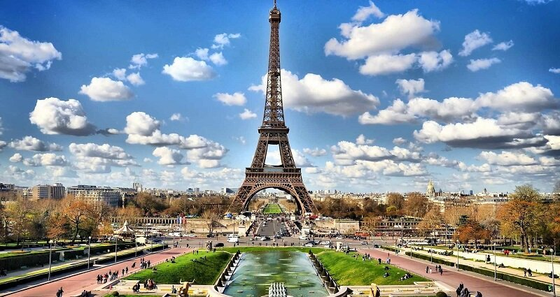
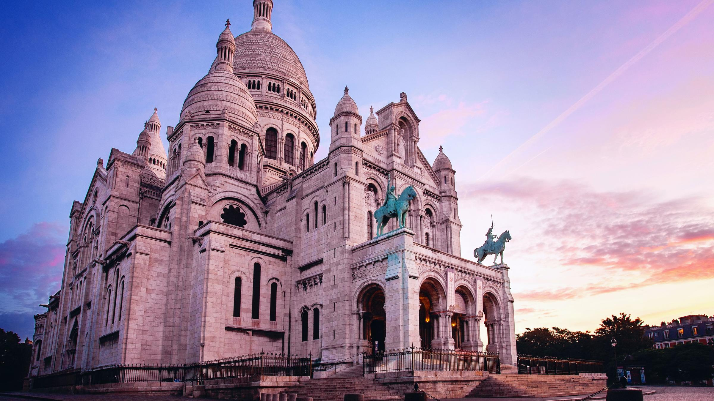
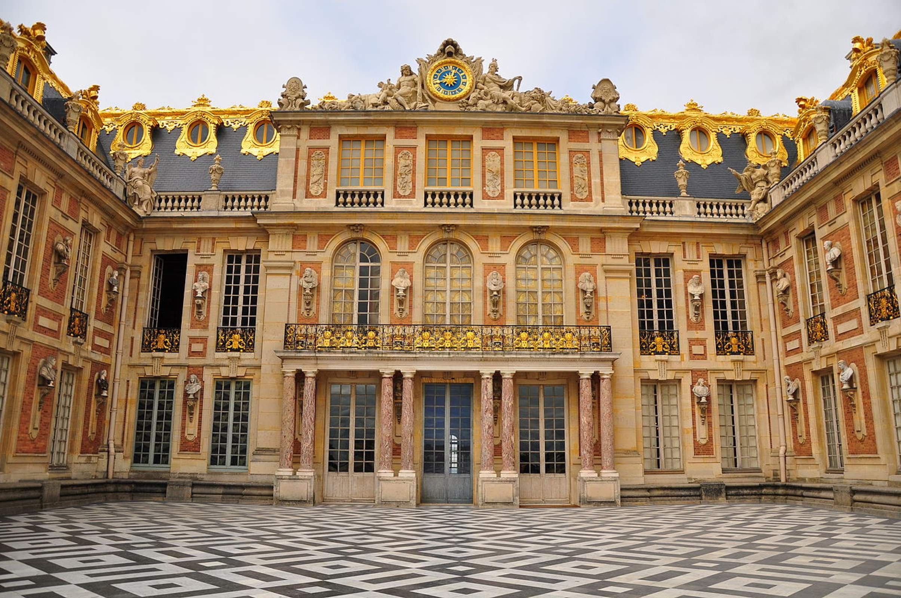
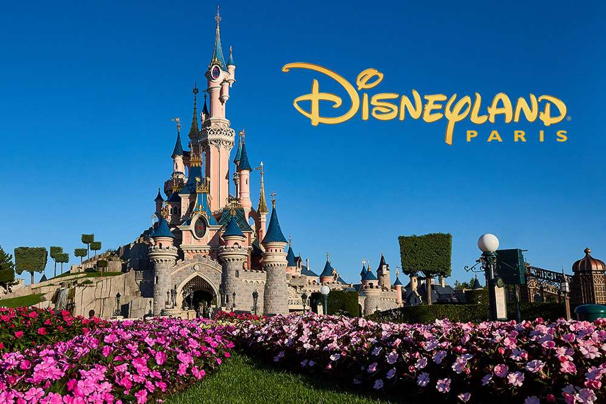

Можно ли сказать о Франции хоть что-нибудь, что не было сказано до нас? — Сомневаемся, ведь страну, считающуюся самым популярным туристическим направлением в мире, уже сотни раз воспели в кинематографе, литературе и музыке. Каждый школьник знает о Наполеоне Бонапарте, а собор Парижской Богоматери от капеллы Сент-Шапель отличит даже совсем несведущий в архитектуре человек. Неужели о Франции нечего рассказать? — Отнюдь, ведь о столь богатой на культурные, исторические и архитектурные ценности стране можно говорить днями напролет. Однако сколько бы раз вы не слышали о Франции, понять и полюбить её по-настоящему можно только приехав туда. И хотя, казалось бы, эта страна изучена вдоль и поперек, для вас она откроется с совершенно новой стороны, с которой до этого не открывалась ещё никому. Узнайте о самых знаковых достопримечательностях, сложите вещи в чемоданы и отправляйтесь в путешествие по Франции, которое наверняка запомнится на всю жизнь.
1. Эйфелева башня
Для одних Эйфелева башня — это символ Франции, без которого представить эту страну уже просто невозможно. Другие же считают, что башня подобная бельму на теле Парижа и чересчур обласкана массовой культурой, экскурсоводами и влюбленными парами. Действительно, на момент постройки в 1887 году Эйфелева башня вызвала бурю негодования среди парижской интеллигенции, а местные власти не успевали разбирать письма, в которых известнейшие общественные деятели просили убрать «ненавистную колонну из железа и винтов». И всё же достопримечательность оказалась слишком популярной, поэтому демонтировать творение Гюстава Эйфеля не стали и, как теперь считают, не зря. Эйфелева башня «настоялась» подобно хорошему вину, став главным украшением Парижа. Исчезни она прямо сейчас, Франция бы лишилась частички души, за которую её полюбили миллионы туристов со всего мира.
2. Базилика Сакре-Кёр
После пожара в 2019 году о соборе Парижской Богоматери заговорил весь мир. Эта трагедия стала одним из самых масштабных событий в истории храма, но далеко не единственным, ведь Нотр-Дам-де-Пари существует уже более 850 лет. За восемь веков эти стены повидали многое и впитали в себя память о временах, когда творилась история, и о людях, творивших её. Само строительство собора растянулось почти на 200 лет, ведь начаты работы были в 1163 году при короле Людовике XVII, а закончены в 1345 при Иоанне II. Позднее здание неоднократно подвергалось изменениям, но по большей части облик церкви был сформирован ещё тогда. Одной из заметных модификаций стала установка шпиля, который уже приходилось восстанавливать после Великой французской революции, и в ближайшие годы придется сделать это снова. Именно его, а также большую часть крыши уничтожил пожар, от последствий которого Нотр-Дам-де-Пари оправится, как обещают власти Франции, к 2024 году.
3. Версаль
Последний король Франции Людовик XVIII умер почти 200 лет назад, но свидетельства могущества и любви к роскоши французских монархов существуют по сей день. Самым ярким из них является Версальский дворец, служивший королевской резиденцией со второй половины XVII столетия. На строительство столь масштабного сооружения ушло около пятидесяти лет, а над созданием парка и внутренней отделки дворца трудились лучшие мастера своего дела. Нельзя точно посчитать сколько по сегодняшним меркам ушло на создание Версаля, но примерная цифра в 250 млрд евро говорит о том, что потрачено на дворец было больше, чем на все государственные расходы Франции в 2021 году. Версаль стал неким ориентиром для сотен архитекторов, а каждый европейский монарх желал иметь в своем распоряжении резиденцию, хотя бы вполовину такую же роскошную, как у французских королей. Как показало время, повторить успех Версаля оказалось невозможно, благодаря чему дворец и ныне считается одним из самых красивых и величественных в мире.
4. Триумфальная арка

Одна из архитектурных доминант Елисейских Полей — это знаменитая Триумфальная арка, построенная в 1836 году. Строительство было начато по поручению императора Наполеона Бонапарта, желавшего воздвигнуть памятник многочисленным военным победам. Ирония судьбы заключается в том, что сначала в 1811 году умер архитектор Жан-Франсуа Шальгрен, занимавшийся возведением арки, а в 1812 армия Наполеона была разгромлена в России. Триумфальное шествие французского военачальника по Европе закончилось, а строительство памятника приостановилось. Наполеон умер в 1821 году, так и не увидев, какой в итоге стала задуманная им Триумфальная арка. Бывший император Франции скончался на острове Святой Елены и лишь в 1840 году его останки вернули в Париж, где он завещал себя похоронить. На прощальной процессии собрались все горожане, а кортеж с прахом Наполеона в первый и последний раз проехал под Триумфальной аркой.
5. Парижский Диснейлэнд
Диснейлэнд недалеко от Парижа трудно назвать частью французской истории, но для многих французов этот парк развлечения является поводом для гордости. Дело в том, что после запуска Диснейлэнда в США и Японии, встал вопрос о поиске подходящей локации для открытия парка в Европе. Из-за экономических перспектив иметь Диснейлэнд на своей территории было выгодным вложением для целого ряда стран. В результате долгой борьбы за право на строительство, Франция обошла Испанию, и в августе 1988 года началось создание парка развлечений в небольшом городке Марн-ла-Валле, славившегося своими живописными ландшафтами. Открытие состоялось в 1992 году, а количество посетителей превысило все ожидаемые прогнозы. На территории в 1943 гектара расположились десятки аттракционов, прогулочных зон, развлекательных центров, кафе, ресторанов и даже несколько отелей. Полагаем, что не стоит рассказывать о том, чем можно заняться в парке, ведь это Диснейлэнд и этим всё сказано.